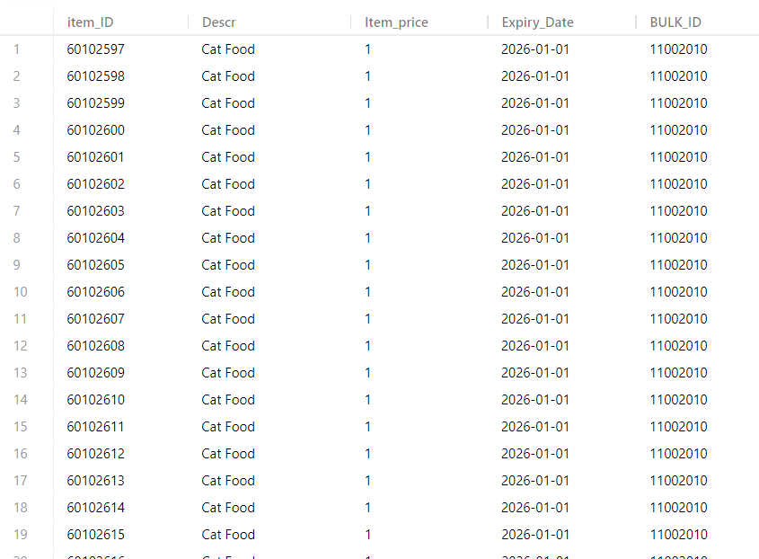
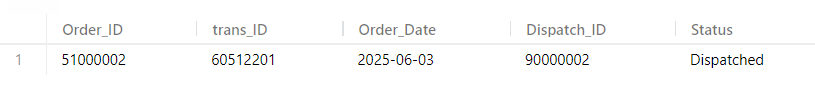

This system centers on six core tables—Suppliers, Inventory_Items, Product_List, Transactions, Orders, and Order_Status—plus a staging table (Inventory_Items_Lim) and several procedures. Suppliers holds each supplier’s Supplier_ID, BULK_ID, a description, and the quantity they can restock. Inventory_Items (keyed by BULK_ID) tracks bulk shipments: next available Item_ID, unit price, remaining quantity, a link to its supplier, and a simple restock flag.
A recursive CTE unrolls each bulk’s quantity into individual units, storing them in Product_List (keyed by Item_ID). Each product row carries its own description, price, and an expiry date determined by its Item_ID range. As a result, Product_List always reflects the current set of items ready to sell, while maintaining a reference back to the bulk via BULK_ID.
When a sale occurs, Make_Transaction—given an Item_ID, new trans_ID, Order_ID, Status_ID, Dispatch_ID, and initial status text—performs these steps inside one transaction: insert into Transactions (capturing Item_ID and price), add an Orders row using the transaction’s timestamp, decrement that bulk’s quantity (and advance its “next” Item_ID) in Inventory_Items, remove the sold unit from Product_List, and call Dispatch to insert into Order_Status (recording dispatch ID and status).
To prevent stockouts, Update_Inventory scans for any bulk with fewer than five units. If found, it loops through each low-stock supplier and calls Refil, which adds back the supplier’s full stock into Inventory_Items, truncates/repopulates Inventory_Items_Lim, reruns the unrolling CTE into a temp table, and re-inserts units into Product_List, setting their new expiry dates.
Finally, Update_Order_Status updates an existing order’s Status and Dispatch_ID in Order_Status, and a small helper procedure, Continue_, returns “Starting adding Transaction,” “No transaction,” or “Invalid Input” based on a simple yes/no input. Together, these pieces automate bulk-to-unit conversion, sales transactions, restocking, and order tracking.